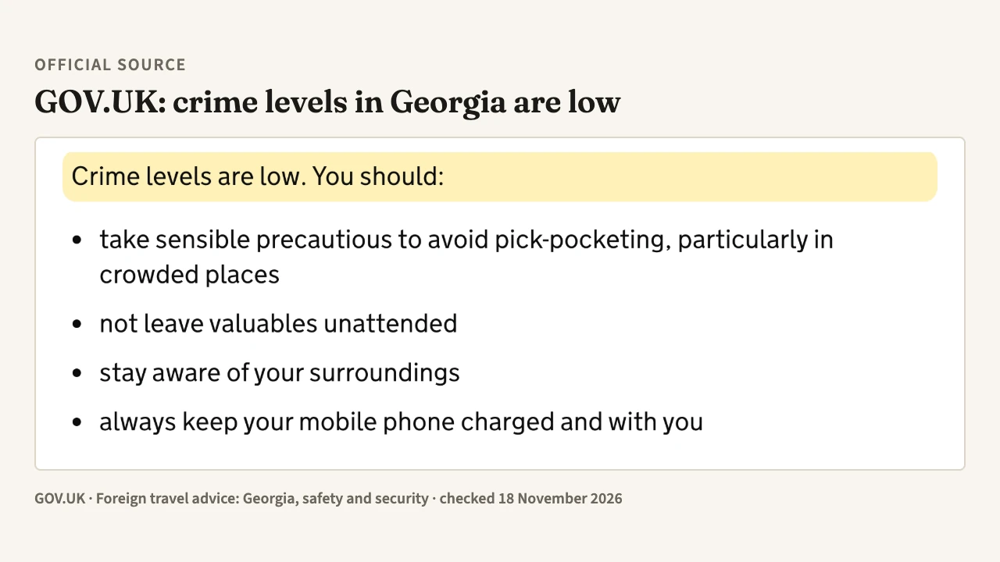
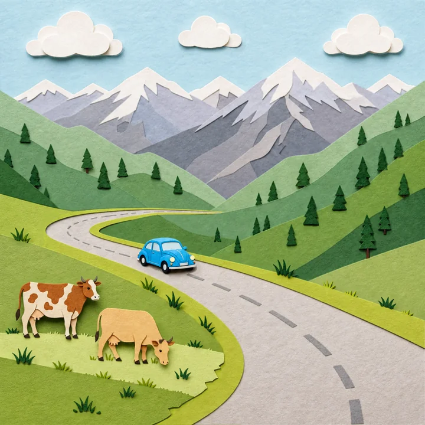

- Emergency number
- 112
- UK advice updated
- 12 Nov 2026
- Canada risk level
- normal; high caution in Tbilisi
- Regions to avoid
- 2
This page is about Georgia the country, not the US state, and is part of our guide to healthcare in Georgia. Checked on 18 November 2026.
Is Georgia safe? The short answer
For an ordinary trip, both governments we checked are calm. GOV.UK states: "Crime levels are low." Canada's travel advice, last updated 27 August 2026, sets the baseline level: "Take normal security precautions in Georgia."
Neither promises more. The UK advice, updated 12 November 2026, reminds readers: "No travel can be guaranteed safe." Canada adds that "Violent crimes targeting foreigners occur occasionally." On terrorism, Canada sees "a low threat", and GOV.UK says attacks "cannot be ruled out".
Both carry exceptions: two regions to avoid (see below), extra caution in Tbilisi because of protests, and roads where, in Canada's words, "Fatal accidents are frequent".
Our reading. For most visitors, the risks worth planning around are the roads, the street protests and health in the mountains, not street crime.


Where not to go: Abkhazia and South Ossetia
Stay out of Abkhazia and South Ossetia. On its warnings page, GOV.UK says: "For security reasons, FCDO advises against all travel to the Russian occupied regions of: South Ossetia, Abkhazia". The FCDO is the UK's Foreign, Commonwealth & Development Office.
The areas next to them. "FCDO also advises against all but essential travel to areas immediately next to the administrative boundary lines with South Ossetia and Abkhazia."
Canada gives a distance. It says to avoid all travel to "the occupied regions of Abkhazia and South Ossetia" and to areas "within 5 km of the administrative boundary line with the occupied regions of Abkhazia and South Ossetia, excluding Highway E60". Its reasons: "crime, military activity, the risk of detention and the presence of landmines".
Your cover. GOV.UK warns: "Your travel insurance could be invalidated if you travel against advice from the Foreign, Commonwealth & Development Office (FCDO)."
Our tip. Before a road trip, check on a map that no stretch of your route runs close to either boundary line, apart from Highway E60.

Is it safe to travel to Georgia right now? The protests
Neither the UK nor Canada advises against visiting Tbilisi: their warnings to avoid all travel cover the two occupied regions and the areas next to them. In the capital, the issue is street protests.
How long and where. GOV.UK says: "28 October marked the 700th consecutive day of protests. Some of these have led to violent confrontation between police and protesters. In Tbilisi the demonstrations are now mainly focused on the Parliament building on Rustaveli Avenue, but they can spread to other areas, particularly on Saturday evenings/nights and on the anniversaries of significant political events."
What to do. "Tensions can escalate without warning. You should: check local media; avoid large gatherings and demonstrations; follow the advice of local authorities".
Canada's view. "Exercise a high degree of caution in Tbilisi due to the risk of demonstrations and clashes between security forces and protestors."
Do not join in. GOV.UK warns: "If you participate or engage in political demonstrations, you may face additional questioning on exit or be refused re-entry to Georgia."
Our tips. On Saturday evenings, plan dinner and walks away from Rustaveli Avenue. If you see a crowd or police lines, take another street and do not stop to film.
Is Tbilisi safe day and night?
The crime to watch for in the capital is petty theft, and the dark side streets need care at night.
Pickpockets and your phone
GOV.UK advises sensible precautions against pickpocketing, particularly in crowded places, not leaving valuables unattended and staying aware of your surroundings. Its last point: "always keep your mobile phone charged and with you". And: "If someone attempts to assault you or you feel threatened, call the emergency number 112 and ask for the police."
Metro, buses and walking at night
Canada says: "Buses and the Tbilisi metro are generally safe and reliable, but pickpockets may target tourists."
At night, mind the street itself. GOV.UK warns: "Street lighting away from main roads can be poor and pavements uneven. There may be occasional short power cuts – consider carrying a torch." Our tip: keep to main streets after dark and wear flat shoes on the old town's slopes.
Bars, drinks and the bill
GOV.UK says: "There have been reports of drink spiking in Georgia. Be wary of strangers approaching you to take you to a restaurant or nightclub." It advises: "Buy your own drinks and always keep sight of them to avoid them being spiked."
Canada warns of "locals luring tourists met online into bars or nightclubs", where they are "forced to pay high bills". Its advice: "Always confirm the price of an item before ordering" and "Check your bill for accuracy before paying".
Taxis
GOV.UK says that "Taxi provision and safety has improved significantly" and gives three rules: "do not flag taxis in the street; try to pre-book taxis through an app; check the taxi has working seatbelts".
Canada adds that official taxis "are recognizable by their white colour and roof-mounted taxi signs", but "Unofficial taxis continue to operate, and drivers generally don't use meters. They may overcharge you for the ride." Our tip: agree the fare before the car moves. For the airport taxi, see our page on arriving at Tbilisi Airport.
Money
"Prices may be quoted in US dollars and euros, but goods and services must be paid for in local currency (lari)," GOV.UK explains, and "Outside major towns, you may not find ATMs or be able to use credit and debit cards." Our tip: take out cash in Tbilisi before you head for the regions.

Is Georgia safe for solo female travellers?
Canada's advice is the most direct here, and it is measured: "Women travelling alone may be subject to some forms of harassment or verbal abuse." It suggests:
- "Avoid dark alleys and isolated areas"
- "Avoid walking alone after dark"
- "Use reputable taxi services or ride-sharing services and sit in the back seat"
Drinks. The UK warning about drink spiking applies here too: buy your own drinks and keep them in sight.
Town and village. GOV.UK notes: "Tbilisi is a cosmopolitan city. There can be more conservative attitudes in rural areas." It asks visitors to "be aware of cultural sensitivities around modest dress (particularly in places of worship)".
Our tips. Carry a light scarf for churches and monasteries. On long taxi rides or hikes, share your live location with someone at home.
Roads, taxis and marshrutkas: the bigger risk
In our reading, getting around carries more risk than the streets. Canada says: "Fatal accidents are frequent and are one of the main causes of death in Georgia."
What GOV.UK warns about. "Take care when driving, especially at night." Its list:
- "roads outside city centres are often badly lit and poor quality"
- "stray livestock can be a hazard"
- "road markings and the right of way can be confusing"
- "many cars are poorly maintained"
- "driving can be erratic"
- "heavy rain, flooding and snow at higher altitudes can affect roads and bridges"
- "landslides are common"
Alcohol. "Georgia has a lower blood alcohol content limit than the UK, so avoid alcohol if driving."
On foot. Canada notes: "Pedestrians often cross in the middle of the road and drivers don't always give pedestrians the right of way."
Marshrutkas. Canada warns: "Mini-buses called "marshrutka" are poorly maintained and often lack security features like seatbelts. Avoid using them."
Our tips for the road.
- Avoid driving at night outside the cities, above all on mountain roads.
- If you hire a driver, check that the rear seatbelts work, and wear one.
- In bad weather, wait a day rather than cross a mountain pass.

Health risks: dogs, water, altitude and the cost of care
Medical emergencies go through 112 as well. GOV.UK's health page says: "Dial 112 and ask for an ambulance." Canada adds: "You can also use the 112 Georgia mobile application to contact emergency service providers in English." Our guide explains how to call an ambulance on 112.
Dogs and rabies
GOV.UK lists "rabies – treatment is available in Tbilisi and major towns. If you're bitten or scratched by a dog, get medical attention immediately." Our tip: do not pet stray dogs. More in our guide to rabies in Georgia.
Tap water, snakes and altitude
- Water. GOV.UK mentions "varying water quality – bottled water is widely available". Our tip: if unsure about the tap water, drink bottled.
- Snakes. It warns of "venomous snakes (vipers), particularly in early summer – few medical facilities outside major towns have anti-venom".
- Altitude. "Altitude sickness is a risk in parts of Georgia, including Gudauri ski resort, Mount Kazbegi, and Mount Tetnuldi." See our page on altitude in Gudauri.
Help in the mountains may be limited. GOV.UK: "If you get into trouble during hiking, skiing, adventure travel or extreme sports, the emergency response may be limited."
What care costs
You pay for treatment as you go. GOV.UK says: "Medical facilities in Tbilisi are available but can be expensive. Outside Tbilisi, medical facilities are limited." And: "The UK does not have a reciprocal healthcare agreement with Georgia. You or your travel insurer will need to pay for all treatment as it's provided."
The catalogue of doctors and clinics in Tbilisi on 100doc.ge lists clinics in the capital. Every visitor also needs a health and accident policy for at least 30,000 GEL; our home page explains the entry rule.
Earthquakes, wildfires and mountain weather
Small tremors are common. GOV.UK says: "There are frequent small earthquakes in Georgia. The most recent significant earthquake took place in 2022 – a 6.2 magnitude earthquake struck 104km south-west of Tbilisi."
Wildfires. "Lightning and wildfires are a risk in summer, particularly in the mountains."
Trails and slopes. Canada warns: "Trails are not always marked and weather conditions can change rapidly." GOV.UK adds that "Off-piste skiing is very dangerous" and "If you're doing extreme sports, consider going with specialist guides." It also advises: "Make sure your travel insurance covers your activities."
Our tip. Tell your guesthouse your route and return time, and turn back if the weather changes.
Laws that catch visitors out
A few rules carry heavy penalties.
Drugs. GOV.UK says: "Illegal drugs, including cannabis, carry severe penalties. You should expect a long jail sentence of 5 to 25 years".
Photos. "Do not photograph sensitive sites like military bases and power installations." Our tip: if unsure, put the camera away.
Protests. Taking part can mean questions on exit or a refused re-entry; see the protests section.
Discrimination. GOV.UK notes: "Georgian law protects everyone's human rights and equality, but ethnic minorities and LGBT+ people may face discrimination."
Frequently asked questions
Is it safe to travel to Georgia right now?
For most of the country, yes, with normal precautions. Avoid Abkhazia and South Ossetia. Canada advises a high degree of caution in Tbilisi because of protests, so keep away from Rustaveli Avenue when they are on.
Is it safe to walk in Tbilisi at night?
Crime levels are low, but lighting away from main roads can be poor. Keep to main streets and keep your phone charged.
Which areas of Georgia should I avoid?
Abkhazia, South Ossetia and, in Canada's advice, the area within 5 km of their boundary lines, except Highway E60.
Can a woman travel alone in Georgia?
Yes, with care. Canada warns of possible harassment or verbal abuse and advises against walking alone after dark.
Can I drink the tap water in Georgia?
GOV.UK says water quality varies and bottled water is widely available. If in doubt, drink bottled.
What is the emergency number in Georgia?
112, for the police or an ambulance. The 112 Georgia app works in English, according to Canada.
What happens to my cover if I go to Abkhazia?
You may lose it. GOV.UK warns your travel insurance "could be invalidated" if you travel against FCDO advice.
Sources
- GOV.UK travel advice for Georgia: warnings
- GOV.UK travel advice for Georgia: safety and security
- GOV.UK travel advice for Georgia: health
- Government of Canada: travel advice and advisories for Georgia
This guide is general information, not legal or medical advice. Travel advice changes; check the sources before you go.